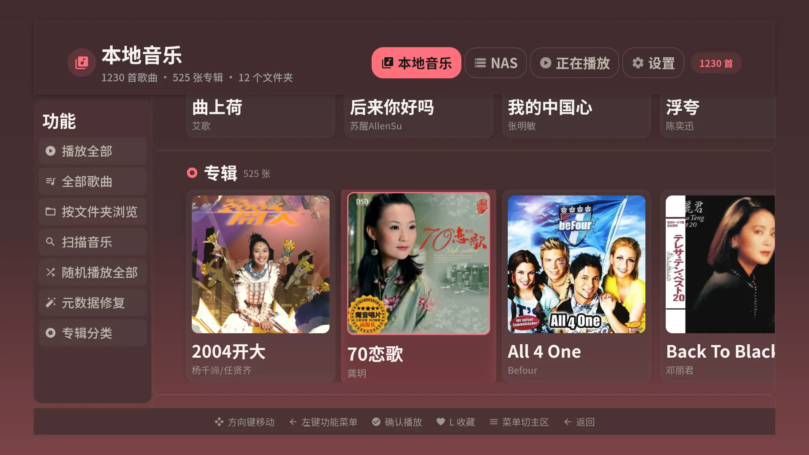
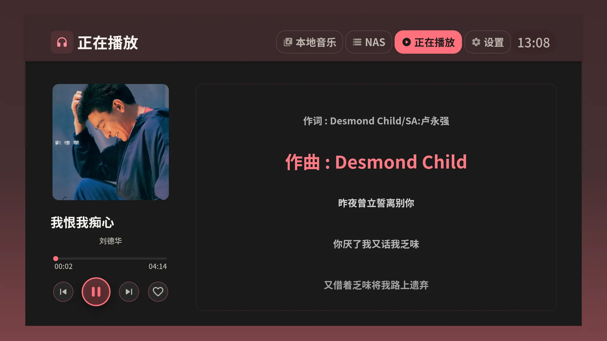
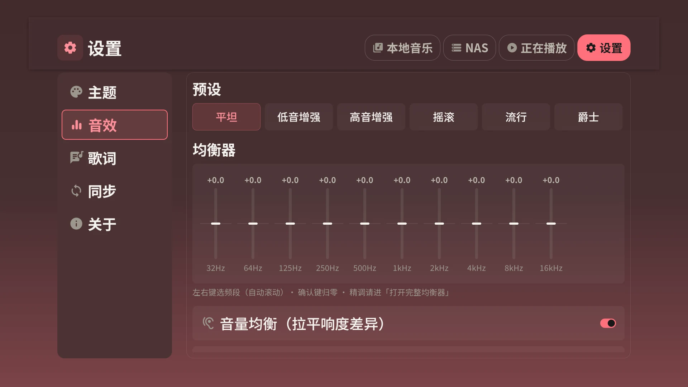

吾爱Music TV 版
吾爱Music TV 版沙发上的好体验
不用鼠标、不用触屏，一个遥控器就是全部。远看清楚，按得明白。
全遥控器操作
方向键走完整个界面，焦点状态与字号专为远距离放大；左右切背景、上下调亮度、OK 播放暂停，按键提示常驻屏幕。
四种全屏沉浸形态
歌词、相册、星空环、音波并列可选，左右键循环切换。全屏歌词支持双语逐字与自定义歌词源，观演级视觉。
NAS 曲库与开机自启
局域网 NAS 目录直接入库，虚拟机顶盒成为家庭音乐中心；开机自启默认开启，进系统就在播放页。
真机画面
TV 端 1920×1080 真机截图，涵盖曲库、播放、歌词与设置。






最近更新 · 研发成果 · 进度
版本记录与官方发布清单实时同步，研发成果来自工作室公开的白皮书。
装到电视上
TV 版提供多个架构安装包。国内走码云，国际走 GitHub，均为官方发布页。
下载到 U 盘
把对应架构的 APK 拷进 U 盘，插到电视上。
在电视上打开安装
用文件管理器找到 APK，按遥控器确认安装（需允许安装未知来源）。
首次启动
给曲库目录授权，即可用遥控器开始聆听。
让 AI 帮你装
ADB 直装，不用 U 盘
如果你手边有电脑，可以不碰 U 盘、也不在电视上用遥控器翻文件管理器。把下面这段需求直接丢给 WorkBuddy（能自己执行命令）或豆包这类助手，它会帮你把安装包下好、连上电视、推送安装；豆包不能执行命令时，把命令复制到终端逐条运行即可。
-
01
让 AI 取安装包
一句话就够：「帮我装吾爱音乐 TV 版到电视上：先下最新的 TV 安装包（优先 arm64，装不上再换 32 位），再用 adb 推过去。」
安装包有两个来源，国内优先码云（快）：
# 版本清单（含各渠道、各架构的下载地址与 sha256） https://music.52ta.top/version.json # 电视版 · arm64（大多数电视盒子 / 智能电视） https://gitee.com/jinghe-net/wuai-music/releases/download/latest/app-tv-release.apk # 电视版 · 32 位（老机顶盒，arm64 包装不上时用它） https://gitee.com/jinghe-net/wuai-music/releases/download/latest/app-tv-release-v7a.apk
下完可以对一下
sha256，与清单里releases.tv.variants的值一致就说明包完整。 -
02
电视打开 ADB 调试
电视上：设置 → 关于 → 版本号连点 7 次，出现「开发者选项」；进去打开 USB 调试，并打开 网络调试 / ADB over network（不同品牌叫法略有差异）。
再到 设置 → 网络 记下电视的 IP 地址，例如
192.168.1.23。电脑要和电视连同一个路由器。 -
03
连接电视
电脑上执行（没装 adb 的话，让 AI 帮你下载 Android platform-tools 并解压）：
adb connect 192.168.1.23:5555 adb devices # 第二行应列出 192.168.1.23:5555 device首次连接电视会弹出「允许 USB 调试吗」，勾选一律允许再确定。若
adb devices显示unauthorized，就是这一步没点确认。 -
04
推送安装
adb install -r app-tv-release.apk # -r 覆盖安装：已装过旧版本时保留数据看到
Success就装好了。装完可以直接让 AI 顺手启动它：adb shell am start -n com.wuaimusic.app.tv/com.wuaimusic.app.MainActivity
-
05
装不上时看返回码
INSTALL_FAILED_NO_MATCHING_ABIS→ 换 32 位包（app-tv-release-v7a.apk）。INSTALL_FAILED_UPDATE_INCOMPATIBLE→ 电视上装过别的来源的同名应用，签名不同；先adb uninstall com.wuaimusic.app.tv再装（会清掉应用内数据）。INSTALL_FAILED_USER_RESTRICTED→ 开发者选项里还有一项「通过 USB 安装应用」，打开它再重试。connection refused→ 电视的网络调试没开，或端口不是 5555；部分机型重启后会自动关闭网络调试，需要重新打开。